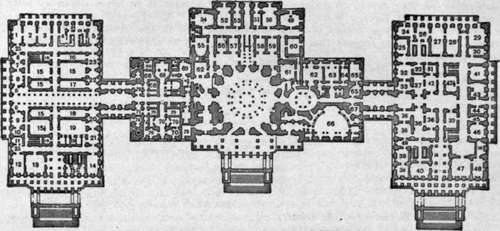

Appendix. Part 22
Description
This section is from the book "The National Capitol. Its Architecture Art And History", by George C. Hazelton, Jr. Also available from Amazon: The National Capitol Its Architecture Art and History.
Appendix. Part 22
We herewith enclose copies of these resolutions, and, in the discharge of the duty imposed on us, have to request that you will give as early an answer to this application as may be practicable.
We have the honor to be,
With great respect,
Your Obedient Servants,
J. C. Calhoun, Vice President and President of the Senate,
A. Stevenson, Speaker of the House of Representatives.
Mr. Geo. W. P. Custis.
Mount Vernon, February 15, 1832.
To the Hon. The President of the Senate,
And the Speaker of the House of Representatives of the U. S.
Gentlemen : I have to acknowledge the receipt of your letter, and the resolutions of Congress to carry into complete effect that which was adopted in December, 1799, for the removal of the remains of General Washington to the Seat of Government.
I have received with profound sensibility this expression of the desire of Congress, representing the whole nation, to have the custody and care of the remains of my revered relative ; and the struggle which it has produced in my mind between a sense of duty to the highest authorities of my Country and private feelings, has been greatly embarrassing. But when I recollect that his will, in respect to the disposition of his remains, has been recently carried into full effect, and that they now repose in perfect tranquility surrounded by those of other endeared members of the family, I hope Congress will do justice to the motives which seem to me to require that I should not consent to their separation.
I pray you, gentlemen, to communicate these sentiments and feelings to Congress, with the grateful acknowledgments of the whole of the relatives of my grand-uncle for the distinguished honor which was intended to his memory, and to accept for yourselves assurances of my gratitude and esteem.
John A. Washington.
Arlington House, Tuesday Night, Feb. 14.
Gentlemen : The letter you have done me the honor to write to me, requesting my consent to the removal of the remains of my venerable grand parents from their present resting place to the Capitol, I have this moment received.
I give my most hearty consent to the removal of the remains, after the manner requested, and congratulate the Government upon the approaching consumation of a great act of National gratitude.
I have the honor to be,
With perfect respect, gentlemen, Your obedient servant,
George Washington P. Custis.
To the Hon. J. C. Calhoun, Vice President, and Andrew Stevenson,
Speaker H. R. U. S.
The Basement Of The Capitol
House Wing. Room
1. Committee on Invalid Pensions.
2. Committee on Insular Affairs.
3. Committee on Agriculture.
4. Stationery room.
5. Committee on War Claims.
6. Official stenographers to committees. 7l 8. Official Reporters of Debates.
10 Speaker's private rooms.
11. Committee on Library.
12. Office of Sergeant-at-Arms.
13. House Post-Office.
I3** !• Committee on the Post-Office and Post-Roads.
15. Clerk s document room. 154. Barber shops.
16. Closets.
17. Box room.
18. 19, 20. Restaurant.
21. Merged in restaurant.
22. Committee on Indian Affairs.
23. Committee on Accounts.
24. Committee on War Claims.
25. Elevators.
House Committees. Terrace, South Side
1. Committee on Alcoholic Liquor Traffic.
2. Committee on the Merchant Marine and Fisheries.
3. Committee on Expenditures in the Agricultural Department.
5. Committee on Mines and Mining.
6. Committee on Immigration and Naturalization.
7. Committee on the Election of President, Vice- President and Representatives in Congress. 9. Committee on Irrigation of Arid Lands in the United States. 11. Committee on Expenditures on Public Buildings. 13. Committee on Manufactures. 15. Committee on Elections No. 3. 17. Committee on Expenditures in the Post-Office Department.
Note.—Rooms occupied by the House Committees on Reform in the Civil Service, Leveesand Improvements of Mississippi River, Expenditures in the Department of Justice, Expenditures in the Navy Department, Territories, also Office of Index Clerk, are not shown on the diagrams. They are located in the sub-basement, west front, on the house side of center of building.
Main Building. Room
49. Senate Committee on the Census.
50. Senate Committee on the Library.
51. Senate Committee on Education and Labor.
52. House Committee on Labor.
53. House Committee on the Census.
j- House Committee on Rivers and Harbors.
55. House Committee on Education.
56. House Committee on Revision of the Laws.
57. House Committee on Ventilation and Acoustics.
59. Senate Committee on Pacific Railroads.
60. Senate Committee on Additional Accommodations for the Library of Congress.
61. Storeroom for Library.
62. Storeroom, Supreme Court.
63. Senate bathroom.
64. 65. The Supreme Court—consultation room.
66. Congressional Law Library, formerly the Su> preme Court room.
67. Congressional Law Library.
68 j Office of Doorkeeper of the House.
"j Office of superintendent of folding room.
69. House Committee on Private Land Claims.
70. Offices of the Chief Clerk of the House.
71. Committee on Printing.
72. House Committee on Expenditures in the Interior Department.
73. House Committee on Militia.
74. Committee room on Alcoholic Liquor Traffic merged in the Disbursing office.
Senate Wing
24. Committee on Rules.
25. Committee on the Revision of the Laws.
26. Committee on Relations with Cuba.
27. Committee on Military Affairs.
28. Committee on the Philippines.
30. Committee on the Judiciary.
Continue to: